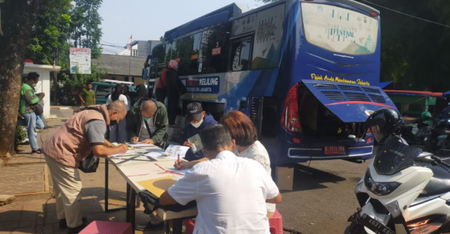

- Bagi warga Tangerang Kota yang ingin melakukan perpanjangan masa berlaku Surat Izin Mengemudi (SIM), Anda dapat mengunjungi Satpas atau pelayanan SIM Keliling Polrestro Tangerang Kota yang sudah disediakan.
Layanan SIM Keliling pada Senin (28/9/2026)) dilaksanakan di dua lokasi, yaitu:
1. Plaza Shinta Mall Karawaci, pukul 08.00 - 12.00 WIB.
2. Ruko WOM Finance Pasar Baru, pukul 08.00 - 12.00 WIB.
Layanan SIM Keliling Polrestro Tangerang Kota hanya melayani permohonan perpanjangan SIM A dan C yang dapat dilakukan sebelum masa berlaku habis. Apabila masa berlaku SIM habis diberlakukan penerbitan seperti SIM Baru.
Untuk biaya perpanjangan sesuai dengan PP Nomor 60 Tahun 2016 tentang Penerimaan Negara Bukan Pajak adalah Rp 80.000,- untuk perpanjangan SIM A dan Rp. 75.000,- untuk perpanjangan SIM C.
Syarat perpanjangan SIM A atau C sebagai berikut:
1. Membawa KTP asli dan Foto Copy.
2. Membawa SIM asli yang masih berlaku.
3. Tes Psikologi SIM.
4. Surat Keterangan Sehat.

Kembali ke Beranda.
|